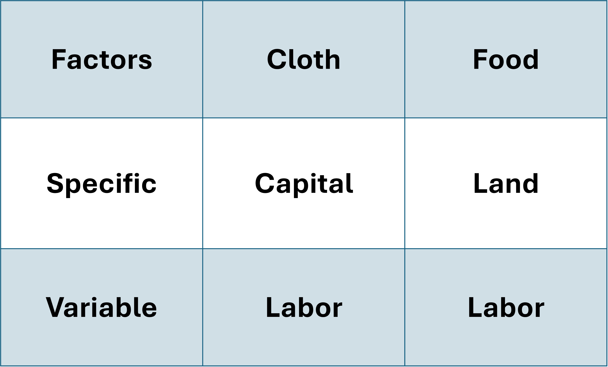
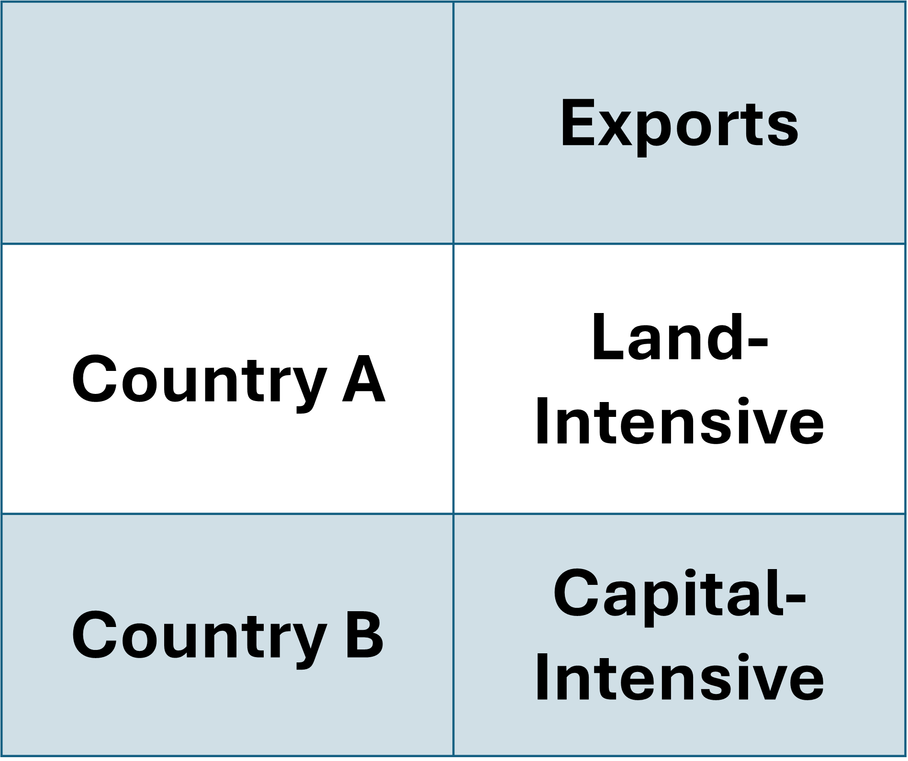
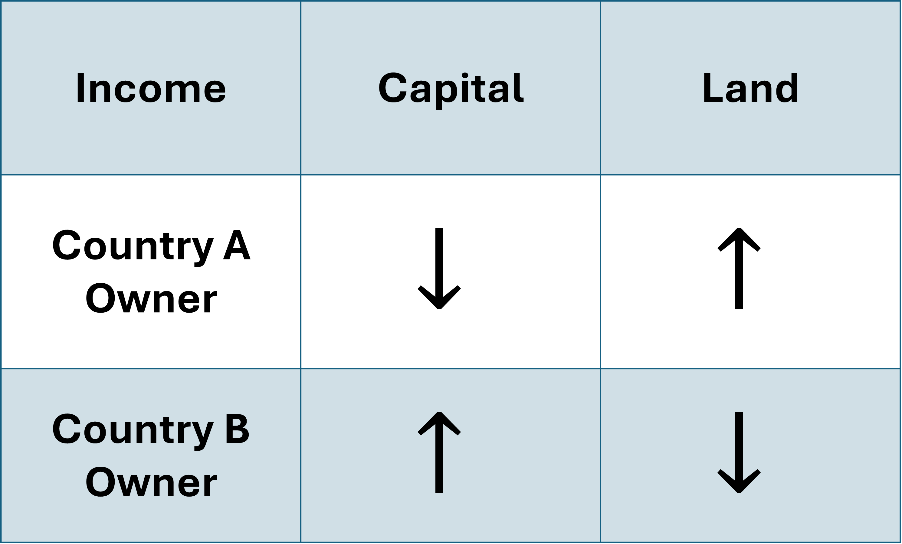
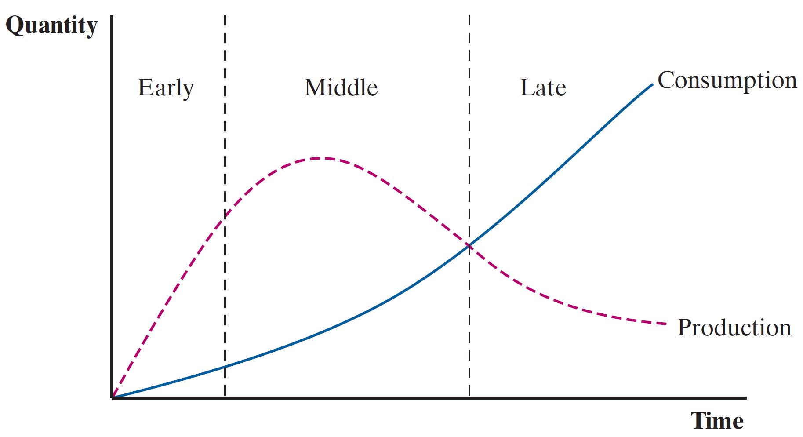

Factor Endowments | Heckscher-Ohlin Model
EC 380 - International Economic Issues
2024
Heckscher-Ohlin Model
Introduction
The HO model starts by noting that countries are endowed with different levels of each input (factors)
Each output (goods) require a different technology and mixes of the various possibl inputs
Take for example coffee production. It requires:
- Coffee plants
- Workers to harvest
- Expensive and large ovens
- Engineers and “Q Graders”
The fact that some countries may inherently have higher availability of inputs creates productivity differences
HO Model - Key Terms
We define factors as inputs required in the production process
The fact that factors may be different introduces two relative measure definitions:
- Factor Abundance: If a particular factor \(X\) represents a large share of total factors, the country is \(X\)-factor abundant
- Factor Scarcity: If a country has less of a particular factor \(X\) relative to other factors, the country is \(X\)-factor scarce
In the HO model we will assume two factors of production:
Labor
Capital
HO Model - Key Terms
Since we have two factors, we can create a tool to compare them across countries:
The Capital-Labor Ratio allows us to assign countries into resource endowment groups
It is calculated as:
\[ \dfrac{\text{Capital}}{\text{Labor}} = \dfrac{K}{L} \]
The higher \(K/L\) is for a given country, relative to other countries, the more capital abundant it is
HO Model - Key Terms
Which country is capital abundant?
Using the Capital-Labor Ratio we get
\[ \dfrac{K_{crc}}{L_{crc}} = 0.3 \;\;\;\; ; \;\;\;\; \dfrac{K_{jap}}{L_{jap}} = 0.375 \]
HO Model - Key Terms
The Capital-Labor Ratio implies factor abundancy
The country with the higher C-L ratio is relatively more abundant in capital
The country with the lower C-L ratio is relatively more abundant in labor
This also has implications for factor prices:
Countries where a given factor is relatively more abundant exhibit lower input prices per unit of the factor
A labor-abundant country finds labor to be relatively cheaper (per unit) than the capital-abundant country
It has a comparative advantage in labor-intensive production due to its edge in labor-costs
HO Model - Trade Theory
The Heckscher-Ohlin Model asserts that a country’s comparative advantage lies in the production on goods that intensively use relatively abundant factors
This may explain US trade patterns in which capital-intensive exports of jet engines and agricultural products dominate its goods outflows
- These goods are produced with a lot of physical capital and low amounts of high-skill labor (scientific, engineering, etc.)
Autarky & Trade
Production Possibilities Frontiers
The Ricardian Model assumed a single factor of production (labor) which was homogenous
This implied that countries face the same trade-off between goods regardless of input levels
The PPF was a straight line
The HO Model now considers combinations of factors where some specific mix of the two is most productive
- Because of this necessary mix of inputs, the PPF will be a curve
New PPF
PPF for Country A
New PPF - Increase in Labor Intensive Good
New PPF - Increase in Capital Intensive Good

New PPF
Adjustments at the extremes of the frontiers require a disproportionately large exchange in factors
- Each unit increase in one factor-good leads to an increasingly sizeable loss of the other factor-good
- Opportunity costs are rising for each type of production
- Why?
As you reallocate resources from a capital-intensive good to a labor-intensive, you need greater amounts of factors due to factor combinations being misaligned
- AKA It is not a linear trade-off
Autarky
Free Trade - World Price

Free Trade - Gains from Trade

Gains from Free Trade
Since we are trading at the world price level, we can reach higher indifference curves
- The country produces at B and consumes at C
Therefore if the country produces more of the capital-intensive product than they consume, the must be exporting a subset of that good
- That is the difference between bundle B and bundle C
In constrast, the country produces less textiles than they consume, which suggests that they are importing the difference
Comparing to the Ricardian Model
Try to remember why a country would shift their production when trading under a different world price
The country must produce where the opportunity cost is equal to the relative world price slope
The gains from trade are very similar between both models
Except that the specialization in production is not complete
- This is due to diminishing marginal productivity associated with each factor
Diminishing Marginal Productivity
Definition: Holding the other factor(s) fixed, the marginal unit increase of a given factor yields an increasingly smaller contributions to overall output
Imagine having one shovel to share between 5 workers. The workers can take turns with the shovel whenever they get tired. But how much could total work output increase if we add 10 more workers?
Not much
Diminishing Marginal Productivity
Diminishing Marginal Product of Labor
Trade & Income Distribution
In the Ricardian Model we ruled out harmful effects and suggest everyone benefits in society. Reallocated workers simply leave the shrinking industry for an expanding one.
They are able to exchange their unchanged labor supply for a larger bundle of goods
- Specialization doesn’t incur any costs/penalties
The HO Model takes a more moderate view
Rather than capital and labor, let’s consider two labor sectors:
- Skilled
- Unskilled
Industries require different combinations of skilled and unskilled labor
Heterogenous Income Effects
We will go into this further later in the course but for now let’s keep in mind that trade openness can have heterogeneous effects depending on which part of the skill bracket the worker belongs to
It can be shown that a systematic relationship exists between endowments of factors for a country and who ends up being winners and losers
I’ll show you a theoretical argument for how this can happen. Later we will look at empirical evidence, which uses applied econometric analysis.
Stolper-Samuelson Theorem
Theoretical Outcomes of Assymetric Factors
The Stolper-Samuelson Theorem states that:
- Income depends on input supplied to the value of final product
- Wages will vary depending on their skill level
- Labor input earnings (wages) demand on their demand and supply
Derived Demand: Indirectly finding demand of an input used in produciton from the demand of the final good
If a good is in high demand, and therefore its price is high, then input factors receive high returns
Changes in Prices & Effects on Income
Any change that impact prices will have direct impacts on outcomes
Open trade causes the export good price to rise and import good price to fall
Demand for each input factor readjusts, which leads to changes in returns to each factor
Resources shift away from the imported good sector and move toward the exported good sector, which cause changes in demand for each input
Stolper-Samuelson Example
Let’s consider an economy where the sports cars are the export good
These require a high amount of capital and low amount of labor inputs
Because it is the export good, demand for capital factors rise and demand for labor factors fall
This implies that income for factors in higher demand will rise
Income for factors in lower demand will fall
Stolper-Samuelson Theorem suggests that the increase in price of a good raises the income earned by factors intensively used in its production. A fall in price of a good lowers the income of factors used intensively
Stopler-Samuelson Theorem
According to this theory, a country with a capital-intensive presence (like the US) will shift away from labor demand
- Capital owners will benefit from trade
- Labor will lose out
There is an extension to this called the Magnification Effect which says that changes in prices lead to a larger change in factor incomes
Magnification Effect
Let’s look at how this works in theory
Recall the Stopler-Samuelson Theorem: When the Price of a good increases, the income earned by the factor intensively used in production will increase. The other factor will see decreased earnings.
We can write this up mathematically:
\[ P_{X} = \alpha_{L} * w + \alpha_{K} * r \]
Where
- \(\alpha_{L}\): Labor Share of Factor Inputs
- \(\alpha_{K}\): Capital Share of Factor Inputs
- \(w\): Wage Rate of Labor
- \(r\): Rental Rate of Capital
Magnification Effect
\[ P_{X} = \alpha_{L} * w + \alpha_{K} * r \]
Let \(\alpha_{L}\) be 0.25 and \(\alpha_{K}\) be 0.75
Then this product is made 25% by labor and 75% by capital inputs
It is capital-intensive
The Stolper-Samuelson Theorem predicts that if \(P_{X}\) increases, then \(r \uparrow\) and \(w \downarrow\)
The Magnification Effect says that if prices go up by, let’s say, 10%, then the capital rental rate will see earnings increase by more than 10%
Magnification Effect - Example
Let’s introduce some notation:
\[ \Delta P_{X} = \alpha_{L} * \Delta w + \alpha_{K} * \Delta r \]
Here the \(\Delta\) means “change in”
Let’s throw some numbers to see it in action
\[ 10 \% = 0.25 * -5\% + 0.75 * \Delta r \]
\[\begin{align} 10 \% &= - 1.25 \% + 0.75 * \Delta r \\ 10 \% + 1.25 \% &= 0.75 * \Delta r \\ 11.25 \% &= 0.75 * \Delta r \\ \dfrac{11.25}{0.75} \% &= \Delta r = 15 \end{align}\]
Bridging the Gap in Time
Movement across sectors and optimization of production occurs in what we generally call the Long-Run
The Long-Run is an arbitrary amount of time. It is used as a measure of how things work out after all possible adjustments/adaptations occur.
Let’s look at an example:
Suppose world prices adjust to trade openness and labor resources begin leaving the US steel industry toward some other industry
In the Long-Run, workers may retrain and find employment elsewhere but in the Short-Run they are stuck with pay cuts and unemployment
Specific Factors Model
Heterogeneity Across Time
We can consider the Short-Run stickiness in our HO Model by adding some conditions:
- Three Input Factors: Labor (L), Capital (K), Land (T)
- Two Goods: Cloth and Food
- Production Functions:
- \(Q_{c} = f(K, L_{c}) \Rightarrow \;\) Cloth is made with Capital and Labor employed in Cloth
- \(Q_{f} = f(T, L_{f}) \Rightarrow \;\) Food is made with Land and Labor employed in Food
- Labor across industries must sum up to total labor: \(L = L_{c} + L_{f}\)
Specific and Variable Factors
We call Labor our variable factor because it is used in the production of both goods
And Land and Capital are specific factors because they are exclusively used for specific goods
With these modifications to the HO Model, we have now extended it into a Specific Factors Model
Specific Factors are immobile
- They cannot move between the two industries
Variable Factors are mobile
- Labor can freely move across industries
Trade Patterns
Trade flows will be determined similarly to our HO Model
The difference is that Specific Factors will play a key role in determining Comparative Advantages
Trade flows will be determined by the relative endowment of the Specific Factors
Trade Patterns
Let’s say that Country A is relatively well endowed with land and Country B is relatively well endowed with capital

Country A will Export
- Food
Country B will Export
- Cloth
Specific Factors Dynamics
Let’s look at the steps of openning to trade:
- Each country opens up to trade
- They each follow their comparative advantage and move toward greater specialization
- The shift in production reduces demand for the specific factor used in the non-specialized industry
- In our example, the demand for capital in Country A goes down
- Income for the less utilized specific factor also declines
Specific Factors Dynamics
This model helps us view income distribution effects of trade more clearly
So we have Country A capital owners be hurt, due to the economy moving away from production of capital-intensive cloth
On the other hand, we have Country A landowners experience the opposite effect


Specific Factors Dynamics
How about Labor?
Because labor is mobile between industries, workers that are laid off in the declining sector will find employment in the expanding sector
Additionally, prices of both goods shift from what they were under autarky
In Country A where Food is the export, we would see:
Price of Food
Increase!
Price of Cloth
Decrease!
Effects on Variable Factor Income
The income distribution effect on the variable good is ambiguous
The net effect depends on which is strongest, rising Food prices or falling Cloth prices
It also on their consumption patterns
In its most basic form, we have adapted the HO Model in such a way that we can observe income distribution effects:
Across factor inputs that are specific to production (Specific Factors)
Within factors used in both forms of production (Variable Factors)
Extensions to Trade Theory
Empirical Tests
So far we have argued in-favor and against gains from trade exclusively from theory
You should always be skeptical and ask yourself two questions:
Do the predictions of generalized models hold in the real world?
Are there other reasons that these predicted patterns may be observed in the data?
A great deal of work that economists do is translating theory into empirical analysis
For example, Blonigen & Wilson (2008) examine whether port efficiency allows for greater volume of trade
Emperical Tests - Comparative Advantage
All trade theories come down to differences between countries that establish comparative advantages which motivate trade
Each theory predicts which goods a country will import and export
Empirical tests are difficult due to our inability to observe an ‘autarky’ counterfactual and difficulty in measuring factor endowments
Rather than going between extremes of no-trade to completely free trade, we normally imagine changes in trade openness as a result of:
- Lower tariff rates and reduced trade quotas
Theory vs Empirics
Ricardian Model
Challenging to test due to the assumption of relative differences in technology augmenting labor productivity
Most countries do not produce goods for which they are at a comparative disadvantage so there is no way to measure their productivity in those sectors
Findings
- As labor producitity in a particular industry rises, the intensive margin by which goods are exported increases. The country becomes a net exporter of that godo
The Ricardian model has been more frequently and succesfully tested
Theory vs Empirics
HO Model
- Even harder to apply tests due to challenges involved in accurately measuring factor endowments. Our measures of land and capital values are imprecise estimates
Findings
Cross-country measures of capital, land, and labor endowments are often measured using different means due to methodological differences across national accounting bodies
Even with these flaws, the HO Model is a useful starting point through factor endowments which can then be supplmented with other ideas
Useful way to categorize the income distribution effects of trade
Empirical Tests
So how do we address international economic theories when countries are all measuring our key statistics in different ways?
This normally requires an Non-Governmental Organization (NGO) or world body to apply data collection methods in a cross-country manner
For example, I used data from UN Comtrade which contained values of trade between countries at a detailed level
I complemented this with political manifesto data provided by the Comparative Manifesto Project in order to document how increased opennes to trade has shifted political leans in Costa Rica
Empirical Tests
Other differences between countries, beyond technology and factor endowments, that partly explain difference in trade flows across countries are:
Economies of Scale
Corporate structures
Economic policy
Public infrastructure
Institutional quality
Extensions to Trade Theory
Because of these empirical concerns and other key country-level differences, further extensions to HO have been developed
- Gravity Model
- Product Cycle
- Trade vs FDI
- Offshoring & Outsorcing
These provide theoretical settings which explain a portion of existing trade
Extension - Gravity Model
This model says that to explain how a country trades with other countries, we must factor in distance and size
The larger the other country is, the more demand it represents on the global market for a given good
The closer the other country is, the cheaper it is to access that market
\[ T_{ij} = \dfrac{GDP_{i}^{\alpha} * GDP_{j}^{\beta}}{D_{ij}^{\theta}} \]
Many empirical analyses leverage model specifications on these key factors, which explain much of the variation obseved in country-level trade flows
Extension - Gravity Model
Some examples to fix ideas:
Mexico’s most important trade partner is the US
- Distance: Share a border which means transport costs are less than, let’s say, Europe
- Market Size: US market is huge, and will absorb a lot of Mexican output
US trade with Korea vs trade with Japan
- Distance: Relatively same distance which means equal-ish transport costs
- Market Size: Japanese economy is larger which means more US goods enter Japan relative to Korea
Extension - Product Cycle
Explains exports of sophisticated manufactured goods from countries who are scarce in skilled labor and capital
Many manufactured goods go through product cycles where factor inputs change over time
Early/Development
Middle/Standardized
Late
Extension - Product Cycle
Early/Development
- Goods are produced with a lot of testing (in inputs and final form)
- Requires skilled labor to promote and develop product
- Consumers with higher incomes will be early-adopters and provide crucial feedback
Extension - Product Cycle
Middle/Standardized
- Product becomes standardized in characteristics and production process
- Shift production toward low labor cost nations
Extension - Product Cycle
Late
- Consumption in high-income countries exceeds production
- Production is concentrated in low-income countries as production process has taken form of assembly-type operations
- High-income countries need to innovate and restart the cycle in order to continue growth
Extension - Product Cycle
High-Income Countries

Low-Income Countries

The composition of factor inputs and cost minimization decisions by firms lead to relocation of production efforts, increasingly toward lower-cost labor nations
Trade/FDI
In the Product Cycle extension, firms invest abroad and some output generated is sent home for consumption
This is a great difference from the HO Model where no investment abroad is taken into consideration and factor endowments cannot cross countries
We can then introduce the concept of Foreign Direct Investment (FDI)
FDI suggests that cases may exist where firms elect to invest abroad rather than transport/ship goods abroad
Intrafirm trade is when these firms, with foreign affiliates, import outputs back home and it is handled by the parent firm
Trade/FDI
Extension - Offshore/Outsorce
Offshoring: Set up a plant abroad to produce goods
Outsorcing: Contract a different firm to produce goods for you. Can be international.
Modernization of the trade process has made these international features of production and distribution chains more feasible
Largely driven in the 1990s by internet availability, satellite communication, containerization of cargo and improved computing power
Easier to succesfully manage business operations abroad (marginal cost of multinational enterprise operations lower)
Extension - Offshore/Outsource
Effects include a trend toward international production, with comparative advantages across countries featuring in individual firms’ supply chains
Rather than specialize in goods, countries can specialize in key intermediate inputs
Trade economists refer to this as increased formations of global value chains
Many exports and local production processes now rely on the availability of imports
There is a huge vulnerability if ports become congested or delays occur
EC380, Lecture 02 | HO Model